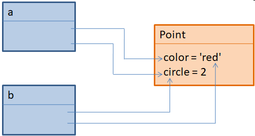
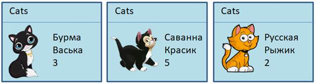
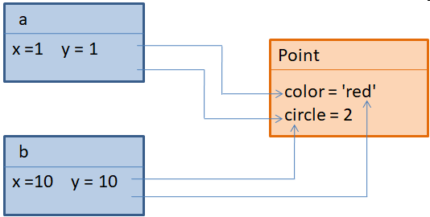
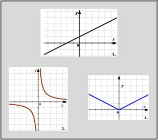
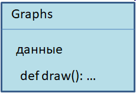
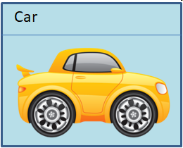
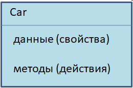
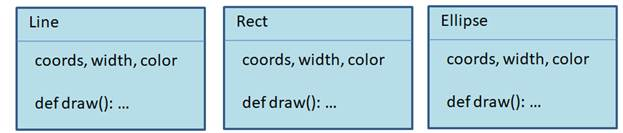
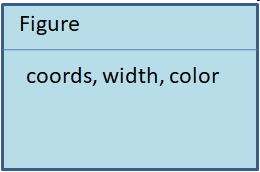

| Тема 1 Концепция ООП простыми словами. | ||
| Назад | ||
|
Почти всегда в программах мы оперируем объектами данных. Например, создается программа по учету животных, в частности, котов и кошек. Значит, здесь мы имеем дело с объектом коты (Cats). И было бы хорошо все данные, связанные с котами, представлять в программе как единое целое. Как раз это можно сделать с помощью класса:
 Здесь класс можно воспринимать, как шаблон, по которому будут формироваться данные о котах. В этом шаблоне есть три свойства: порода, имя и возраст. Программист сам решает, сколько и какие свойства будет содержать класс. Я решил, для примера, пусть будут такие. А вот конкретные коты – это объекты данного класса:
 И таких объектов может быть множество. То есть, объекты создаются по образу и подобию шаблона – класса, в данном случае Cats. Далее в программе мы можем работать с этими объектами-котами, как с единым целым. Вообще, класс может содержать не только свойства, то есть, данные, но и методы – набор функций, определенные для работы с классом и его объектами. То есть, класс может описывать некий алгоритм, фрагмент программы, присущий именно этому объекту. Например, в классе можно определить метод (функцию), которая бы рисовала кота на экране устройства. Пусть, для примера, она называется draw():
 Тогда у каждого объекта этого класса можно будет вызывать метод draw() и на экране будет рисоваться соответствующий кот. Видите, как удобно можно оперировать объектами на уровне классов. И это только начало. Разумеется, таких методов в классах может быть сколько угодно. И они, как правило, имеют доступ ко всем свойствам текущего класса и объекта. В результате, в рамках одного класса можно сформировать полноценную программу, которая часто работает независимо в каждом объекте этого класса. Чтобы это было понятнее, приведу пример из своей практики, когда я впервые применил ООП и был этим очень доволен. Как то мне понадобилось вывести в одном окне несколько независимых графиков функций:
 Тогда я определил класс Graphs для отображения и манипулирования графиками (перемещение, изменение масштаба и прочее). А, затем, каждый конкретный график стал просто объектом этого класса.
 Благодаря этому, у меня в программе один блок кода отвечал за независимое отображение сразу нескольких графиков в окне программы. И это было здорово! ИнкапсуляцияИтак, мы теперь представляем себе, что такое класс и что такое объекты класса. Сделаем следующий шаг и отметим, что класс вообще должен восприниматься как единая, целостная конструкция, все внутренние манипуляции с его данными должны быть сокрыты в этом классе и в идеале недоступны извне. То есть, программисты, использующие его, не могли бы обращаться ко всем его данным и методам, а только к некоторым – разрешенным. Это, как с реальными вещами. Например, когда мы покупаем автомобиль, то нам важно как им управлять, какие у него характеристики, но совершенно не имеет значения, как работает двигатель, почему крутятся колеса, из чего сделаны стекла, как взаимодействуют между собой все его агрегаты и прочее и прочее. Пользователю автомобиля главное, чтобы он безупречно работал и довозил его с комфортом из п. А в п. Б.
 То есть, машина в целом, это некая капсула, которая внутри себя скрывает огромное количество разных узлов, взаимодействующих между собой. И, в идеале, нам совершенно не важен их внутренний алгоритм функционирования. Важен конечный результат – завели и поехали! Та же идея заложена и в классах. Они вроде капсулы, которая содержит в себе данные и методы, которые и определяют внутренний алгоритм функционирования данного класса:
 И чтобы пользователь класса не мог случайно или намеренно вмешаться в его внутреннюю работу, данные и методы можно скрывать. То есть, к скрытым данным и методам нельзя напрямую обращаться извне, только внутри класса. Такой механизм в ООП называется инкапсуляцией. Благодаря инкапсуляции класс становится единым целым, а работа с ним возможна только через разрешенные (публичные) свойства и методы. Например, в автомобиле такие разрешенные методы – это руль, коробка передач, педали газа и тормоза и прочее, чем мы можем управлять во время движения. А все остальное, лишнее для нас, скрыто внутри. И по большому счету, нам не важно, как именно достигается результат, главное, чтобы ехали! Это и есть идея инкапсуляции в ООП. НаследованиеСледующая важная идея ООП – наследование классов. Наследование позволяет как бы вынести «за скобки» общее для разных классов. Я часто здесь привожу пример с разработкой графического редактора, в котором можно рисовать графические примитивы: линии, прямоугольники, эллипсы и другие фигуры. С точки зрения ООП каждый такой примитив удобно представить своим классом:
 Но, очевидно, в этих классах будут общие свойства: coords, width и color. Получаем дублирование кода, то есть, нарушение принципа DRY – не повторяйся. Именно эти общие свойства целесообразно вынести в общий для всех них базовый класс Figure:
 Но, чтобы данные и методы класса Figure появлялись в дочерних классах Line, Rect и Ellipse, необходимо унаследовать их от класса Figure. То есть, благодаря механизму наследования классов, мы можем использовать ранее созданные классы и расширять их функциональность. В нашем примере, есть класс Figure, который только хранит данные. А унаследованные, дочерние классы расширяют его функциональность и выполняют рисование конкретных графических примитивов. ПолиморфизмНаконец, последняя важная концепция ООП – полиморфизм. Это необычное слово, применительно к классам и объектам означает, что мы можем единым образом работать с разными типами данных. Вообще, в программировании различают два вида полиморфизма. Это, так называемый, Ad hoc полиморфизм и параметрический полиморфизм. Первый, Ad hoc существовал еще до появления ООП и реализовывался через перегрузку функций и приведение различных типов данных. Я не буду на нем подробно останавливаться, тем более, что в Python он не используется. А вот второй, параметрический, это очень классная вещь. Я снова вернусь к примеру с графическим редактором, где у нас было три класса с одним базовым Figure. В базовый класс я также добавил метод draw() и вы сейчас поймете почему. Допустим, что для каждого класса были созданы объекты. И наша задача их нарисовать в окне программы. Для этого есть метод draw(), который существует в каждом дочернем классе: Line, Rect и Ellipse. Так вот, если бы не было полиморфизма, то мы в программе должны были бы сначала перебрать список из объектов Line, затем, список из объектов Rect и наконец, из объектов Ellipse. Очевидно, это не лучший подход. Представьте, что в будущем у нас будут появляться все новые и новые виды графический примитивов, например, треугольник, пятиугольник, трапеция и т.п. Тогда списков разных типов объектов будет все больше и больше, а программа все сложнее и сложнее. Да и, кроме того, появится дублирование кода. Но, благодаря параметрическому полиморфизму, мы можем оперировать разными типами объектов через их единый базовый класс, в нашем случае Figure. Достаточно создать список, каждый элемент которого будет иметь тип Figure и через ссылку на базовый класс вызывать функцию draw(). Причем автоматически будет вызван метод draw() соответствующего дочернего класса. Так устроено наследование в ООП. В результате, мы имеем единый интерфейс – класс Figure для управления самыми разными типами графических примитивов. Причем, в будущем в программу можно добавлять новые графические классы, просто унаследовав их от Figure и они автоматически будут встраиваться в общую логику работы программы. И это невероятно удобная вещь! Благодаря наследованию и полиморфизму мы можем на уровне ООП описывать общую, абстрактную архитектуру работы программы в целом, а потом, создавая дочерние классы, наполнять эту программу конкретным содержимым, конкретным поведением. Это буквально переносит нас на совершенно другой, более высокий уровень программирования – целостного, абстрактного описания информационных потоков наших приложений. Поэтому не случайно большинство современных паттернов проектирования основаны именно на концепции ООП. Без нее общее описание программных конструкций было бы очень непростым занятием для программистов.
|
||
| Конспект подготовлен Бакулиным А. М. 2022 год. | ||